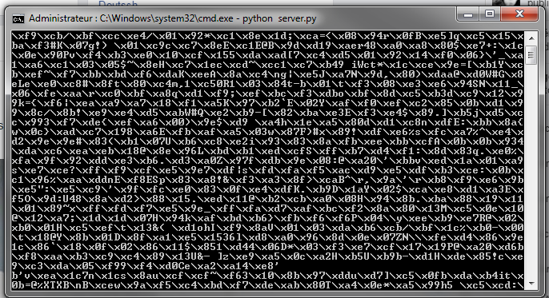
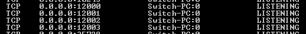

Messagerie Reseau javascool
Vianney Fargere, Lucas Gasté, Francois Morelle
Pourquoi travailler sur une messagerie réseau ?
Nous savions tous les 3 que nous ne voulions pas créer un jeux, cela ne nous interesse pas. On cherche plutôt quelque chose d'utile et qui utiliserait internet.
Dans un premier temps on a pensé à créer un outils qui récupère les informations de spots de surf (houle, période, vent, température) et qui conseillerait à l'utilisateur une certaine type de planche, épaisseur de combinaison en fonction des données reçues. On a abandonné ce projet car les API qui permettaient de recevoir les informations étaient toutes payantes.
L'idée de la messagerie nous est venue un peu plus tard.
Quels éléments intégrer dans notre projet ?
Dans un premier temps notre but principal était d'envoyer des messages poste à poste ce que nous avons fait très vite. Le projet était alors simple et basique.
On a alors eu l'idée d'essayer d'envoyer des images comme un simple transfert de fichier. Ceci fait on s'est mis d'accord sur le fait d'également les afficher sur la zone d'affichage des messages.
Une fois tout cela fait on a voulu intégrer une option marrante sur notre projet. Au début, des messages cachés qui provoquaient des sons ou des mots interdits mais on a uniquement retenue l'idée du wizz.

La répartition du travail
| Javascool | HTML | CSS | Management | |
|---|---|---|---|---|
| Vianney | Interface graphique des fenêtres, aide à l'algorithmique des classes. | Validation et vérification du code | Ecriture du CSS | Participation au cahier des charges |
| François | Ecriture d'une fonctions | Responsable du cahier des charges | ||
| Lucas | Ecriture de la classe Serveur et en partie la classe Client | Structure du site en HTML intégration de bootstrap | Participation au cahier des charges |
Les problèmes rencontrés
1. L'envoie de multiple messages
Nous avons rencontrés plusieurs problèmes particulièrement lors de l'écriture du javascool. Au début nous ne pouvions pas envoyer plusieurs messages à la suite. C'est à dire qu'il fallait attendre que l'autre personne réponde pour pouvoir envoyer un autre message.
while(true)
{
String msg = readString("Votre message");
Socket.sendMessage(msg);
String msgRecu = Socket.getMessage();
if(msgRecu != null)
{
println(msgRecu);
}
}
Il a donc fallut faire appel a une classe dérivant de Thread permettant de lancer une tache asynchrone et qui donc ne bloque pas le prorgamme. Cette fonction nommée run nous permettra de lancer une boucle qui attend un message et l'affiche.
2. L'envoie d'image
Avant que l'on décide d'envoyer des images on utilisait la classe Socket server (documentation ici). Elle était capable de gérer la création et connexion de socket toute seule. Elle fournissait également des fonctions comme sendMessage(String msg) ou getMessage() qui nous facilitaient la tâche.
Cependant la classe ne gère pas l'envoie d'images et il était impossible de récupérer le flux sortant ou entrant pour pouvoir envoyer autre chose que du texte.

Pour envoyer des données binaires comme ci dessus (représentées sous forme hexadécimale) nous avons cessé d'utiliser la classe fourni par Javascool et avons utlisé la classe Socket et SocketServer fourni par Java. On a donc été obliger de réécrire toutes les fonctions.
sendImage(File file)
{
try
{
out = new PrintWriter(socketduserveur.getOutputStream());
out.println("IMG");
out.flush();
o = socketduserveur.getOutputStream();
BufferedImage image = ImageIO.read(file);
ImageIO.write(image , "PNG", o);
out.println("");
out.flush();
}
catch(IOException e){}
}
Ce code est l'équivalent de la fonction sendMessage(String msg) mais il permet d'envoyer des données binaires / brutes.
3. Les déconnexions inattendues
On a du répondre au cas ou l'un des deux utilisateurs se déconnecterait sans utiliser le bouton de déconnexion c'est-à-dire en cliquant sur la croix rouge. Si on ne le faisait pas la connexion ne se serait pas fermée et la prochaine tentative de connexion aurait avorté. Idem si on ferme le client sans fermer le port ouvert on ne pourra pas l'utiliser ultérieurement, il sera indisponible pour d'autres programmes et cela est dangereux du coté sécurité.

Cette image nous montre plusieurs ports ouverts lors de l'utilisation du serveur qui n'ont pas été fermés.